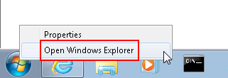
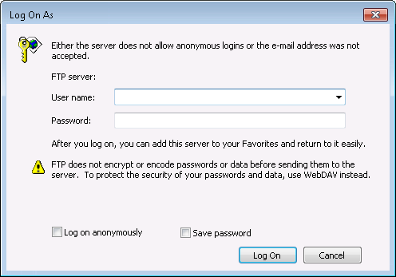
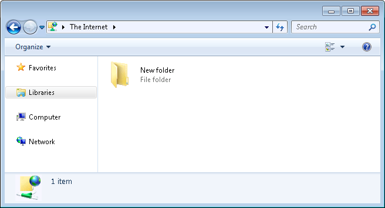

- In startup, please press the right button of mouse and click “Open Windows Explorer”
 - In the internet address bar, please input ftp://, and press “Enter”. Please refer to the following picture.
- Then the system will prompt “Log On As dialog”
Please enter your User name and Password.
They are the same as your learning system account. And then click “Log On”.
- After you login successfully, The Windows Explorer lists your current content of this specified course. Please refer to the following. 